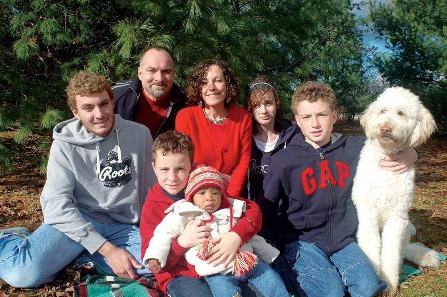
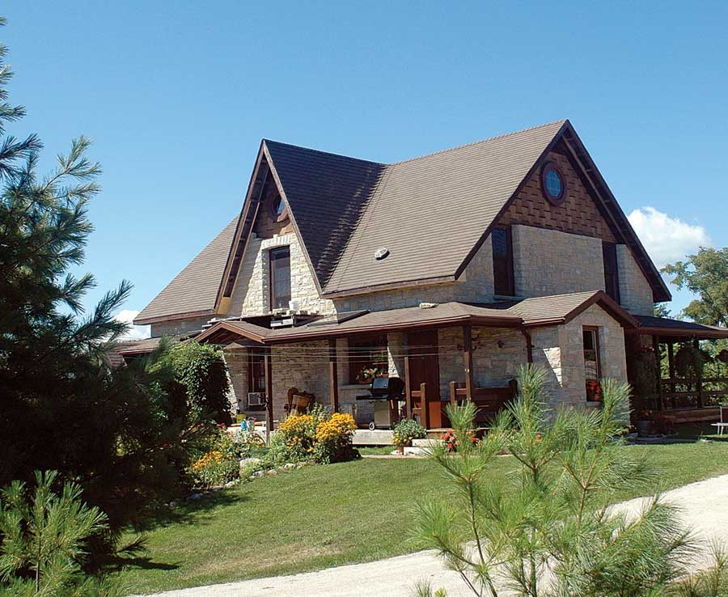
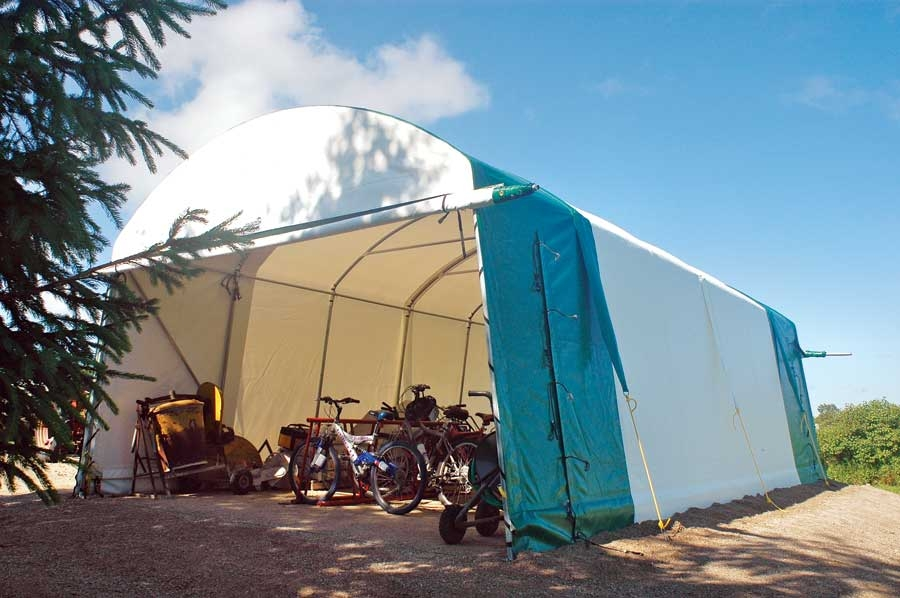
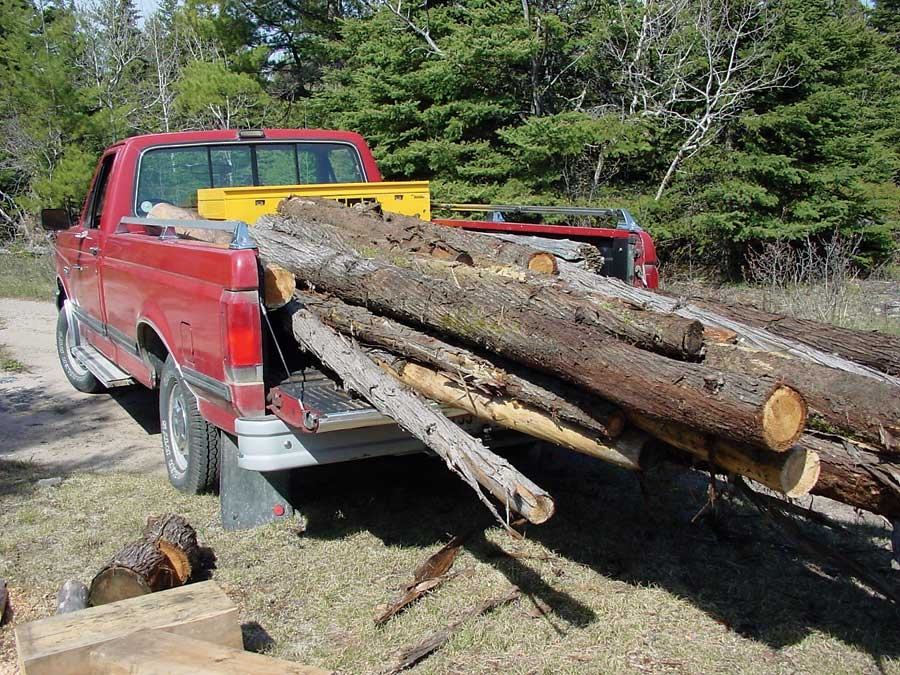
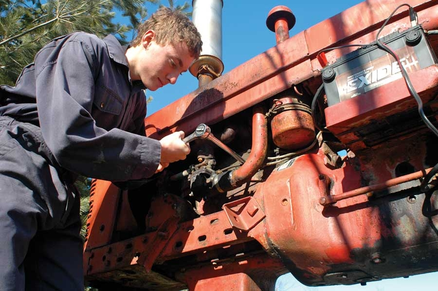
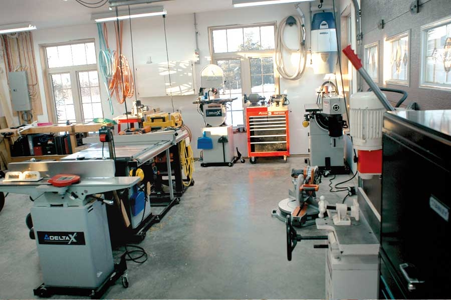
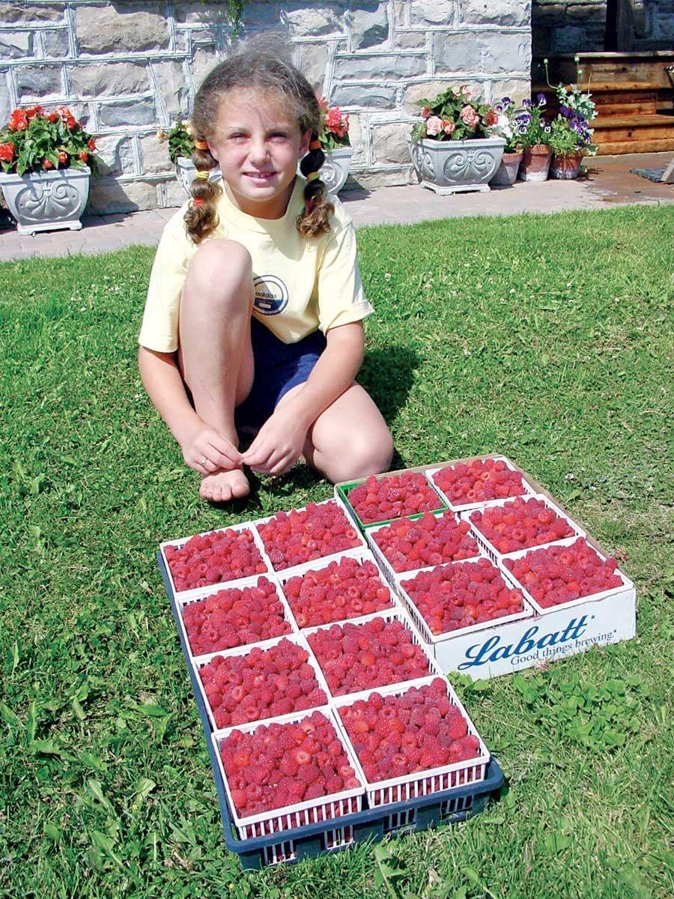
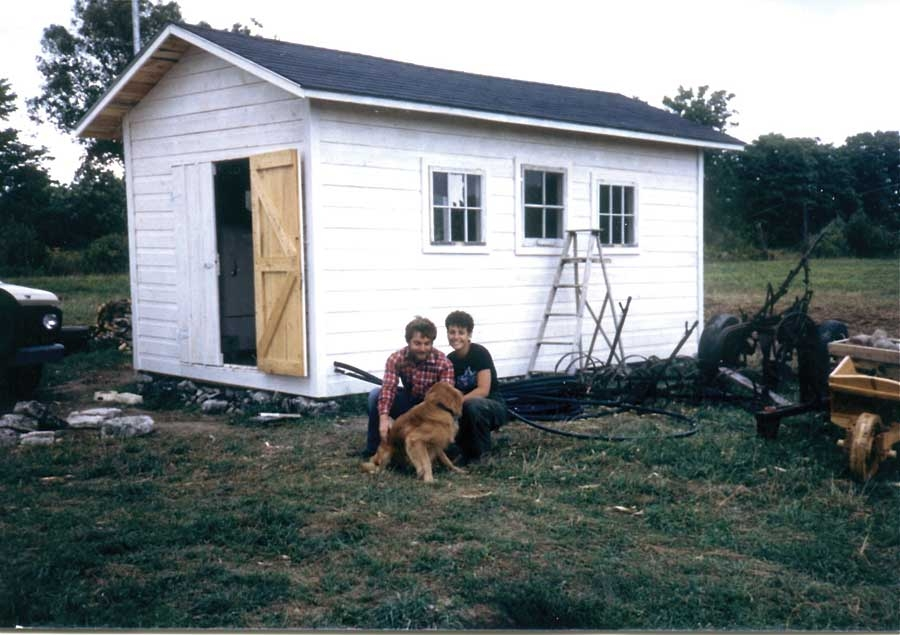
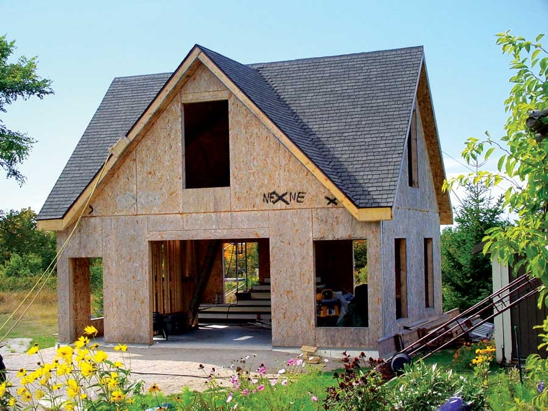

Wise plans are the most important thing you’ll ever have on your homestead. That’s because wisdom creates the framework within which good things happen. More than 20 years ago, I cut through a tumbledown wire fence at the edge of an empty pasture, rolled up my sleeves, and began applying a big homestead vision to a quiet piece of farmland and forest I had recently purchased not far from the middle of nowhere (more specifically, 91 acres on Manitoulin Island in Ontario). My family and I have been blessed with plenty of success ever since, but looking back, I can also see how I could’ve done better if only I’d had more wisdom. What you’re reading now is the article I wish I’d read in May 1986.
If your land has no buildings, then a tent might be your first homestead home. I lived under sometimes-leaky canvas for many months as I began developing my property, and this experience left me eager to get under a proper roof. Too eager. My enthusiasm prompted me to hastily build a 10-by-20-foot wood frame toolshed as my first home, and while it seemed like a luxury hotel at the time, I would have saved money and improved my effectiveness in the long run if I’d built a fully insulated, properly plumbed four-season cabin just a little bit larger and on a permanent foundation.
These days, my kids are talking about someday finding their own land and living their own homestead adventures. If I’m lucky enough to see that happen, one of the first things I’ll recommend is a design for a small, cozy and economical cabin - just the thing I’d put up today if I were starting all over. I’d use structural insulated panels (SIPs) for the walls and roof structure, all resting on concrete piers set below the frost line. (To learn more about SIPs, see Innovative Insulated Panels.) I’d insulate the floor with 2 inches of polystyrene foam with a second plywood subfloor on top, and put in hot and cold running water. If you’re not patient enough to build such a place while living in a tent, then consider a small, temporary house trailer. Any kind of structure that’s capable of keeping you warm, dry and well-rested year-round is a big advantage.
Many of us choose the country life because we love gardening and raising livestock. Trouble occurs, however, when you try to grow vegetables, raise rabbits and get a couple of riding horses at the same time you’re making a driveway, building a house and sinking a well. I see now that I let my agricultural enthusiasm dilute my focus in the early years. Don’t underestimate the time, money, creativity and energy it takes to build the infrastructure of a good homestead. Trying to do it all at the same time is too much.
I’ve learned that covered storage space for equipment and building supplies is more important than I originally thought. But the good news for you is it’s now easier and cheaper than ever to create durable, well-lit and economical storage spaces, and today’s fabric-based shelters are the way to go. Even a large one goes up in just a couple of days, and the best designs come with a 25-year warranty. Equipment and building materials all do much better if kept out of sun, rain and snow.
It’s easy to spend way too much money on a pickup truck, but it’s also possible to under-equip yourself. I struggled for years with a reliable but ancient 1968 heavy-duty, two-wheel-drive pickup truck. Ten years ago, I bought a 1990 four-wheel-drive half ton, and it’s been the ideal homestead workhorse ever since. Superior traction thanks to the four-wheel drive is the reason why. With regular maintenance, this vehicle has remained reliable enough to take on long road trips. It’s also old and banged-up enough that I don’t mind taking it on narrow bush roads for cutting firewood or gathering building stone.
I’d been on the land for 10 years before the Internet began to make a significant difference in the world. Today, it’s such a valuable source of practical information that you’d be crazy to consider homesteading without a fast, reliable Internet connection and a good computer. The list of innovative tools, valuable techniques and helpful wisdom that I’ve gained online is beyond price. Plus, the Web is useful for earning income in remote areas, as you can sell products online or telecommute. Trouble is, getting a good Internet connection in the country isn’t always easy. If I had to do things over again, I would’ve replaced my dial-up connection with a fast, two-way satellite system much sooner. Two-way, broadband satellite is like oil on the machinery in rural areas.
It used to be that cordless power tools were little better than a joke. No one’s laughing any more. Today’s cordless tools offer the best option for building your homestead because so much of the work you’ll face is out of reach of an electrical outlet. Eighteen-volt models deliver reliable, medium-duty performance; 24- and 28-volt cordless tools cut, drill and drive at least as forcefully as their corded counterparts.
The most economical way to get cordless tools is with a combination kit. The trick is choosing a configuration that gives you the best tool value for your dollar. The three most common cordless tools I use are a drill, impact driver and circular saw, in that order. Not all combo kits include impact drivers, but you’d be wise to choose a collection that does. An impact is much more effective than a drill is at driving screws. An 18-volt system is just fine for most applications.
Our only tractor is a 1953 Farmall Super H that I bought in 1986 for $1,000. Even though it runs well, starts in all weather and has great character, I probably shouldn’t have bought it. The first reason is its lack of hydraulics. The second problem is it lacks another crucial innovation that was unknown to us several decades ago.
While my Farmall is fine for pulling a wagon or skidding logs, it can’t be fitted easily with a front-end loader bucket. I can’t count the times this would have been a huge help. Also, the Farmall can’t make use of the hundreds of implements that are designed to mount on a three-point hitch because it doesn’t have one. When it comes time for me to upgrade, I’ll choose a 30 to 40 horsepower tractor with a bucket, a few pieces of field equipment, and a logging winch to help with management of our 45-acre bush.
Most rural homesteads get their water from a well. You’ve got three options for well pumps: a piston, a jet or a submersible pump. Jet pumps are the cheapest way to draw up water from more than 20 feet below, and that’s why many people choose them. I did, too, but regretted it enough to scrap the system and install a submersible pump a few years later. There are three reasons why.
Submersible pumps sit near the bottom of a well, with wires traveling down to supply electricity and a single pipe extending up to deliver pressurized water to your home. One advantage of this design is that pump operation is silent. But more important is the superior physics involved in pushing water as opposed to pulling it.
You’ll enjoy greater water flow and better water pressure from a submersible pump, all without the need for priming. Piston pumps (only suitable for shallow wells) and jet pumps both require their inlet pipes be completely filled with water before they can start pumping. But submersibles start pumping as soon as you switch them on. It’s simple, effective, and lasts a long time. My first submersible pump worked for 17 years.
Building a rural homestead for my family from scratch has been the biggest and most satisfying adventure of my life. Feel like trying it yourself? Go for it! The time has never been better. Just be sure to gather all the wisdom you can from others, then pass on all the new things you learn to everyone who wants to listen.
Step 1: Break Ground
Step 2: Improve What You’ve Got
Step 3: Expand and Enhance
We lived in a tiny shed while we built our house (see Image Gallery). If we had a do-over, we would have built a cabin to live in first, and then started on our home. Then once the home was finished, we could have converted the cabin into our workshop. You can see pictures of our workshop during construction in the Image Gallery.
Step 1: Establish an Infrastructure
Step 2: Build a House
Step 3: Develop Gardens, Fields and Livestock Shelter
|
 STEVE MAXWELL The author’s family. |
 STEVE MAXWELL The author’s family built this gorgeous home by hand - without a mortgage! |
 STEVE MAXWELL Covered storage space for equipment is a wise investment for new homesteaders. |
|
 STEVE MAXWELL A reliable pickup truck is a wise investment for new homesteaders. |
 STEVE MAXWELL The author purchased this 1953 Farmall Super H in 1986 for $1,000. |
 STEVE MAXWELL The author’s workshop, source of his bread-and-butter. |
|
 STEVE MAXWELL If you focus on getting perennials established before planting annual vegetables, you could have fresh berries for years to come. |
 STEVE MAXWELL This small shed was the Maxwells’ temporary residence while they built their house. |
 STEVE MAXWELL The author’s workshop during construction. |